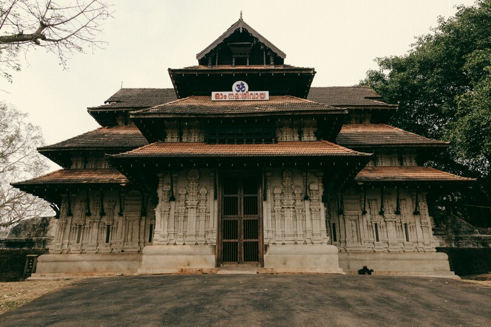

Thrissur (formerly Trichur) is a district of Kerala situated in the central part of that state. Spanning an area of about 3,032 km2 (1,171 sq mi), Thrissur district is home to over 9% of Kerala's population. Thrissur district is bordered by the districts of Palakkad and Malappuram to the north, and the districts of Ernakulam and Idukki to the south and Coimbatore district to the east.The Arabian Sea lies to the west and Western Ghats stretches towards the east. Thrissur district was formed on 1 July 1949, with the headquarters at Thrissur City. Thrissur is known as the cultural capital of Kerala, and the land of Poorams. The district is known for its ancient temples, churches, and mosques. Thrissur Pooram is the most colourful temple festival in Kerala.